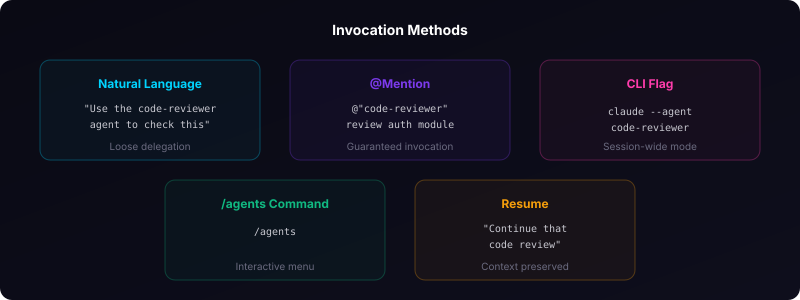

Syntax
Syntax
Claude Codeエージェント機能 完全入門ガイド【後編】
Syntaxです。前編でエージェントの基礎は掴めましたか？ 後編では実践的なテクニックをガンガン紹介していきます。読んだら手を動かす、それが一番の近道。さあ、コード書こう！
前編では、エージェントの基本概念と最初のエージェント（コードレビュアー）の作成・実行まで学びました。この後編では、呼び出し方のバリエーション、2つ目のエージェント作成、設定の詳細、そしてうまく使いこなすコツを紹介します。
この記事は前後編です: 前編 — はじめてのエージェント作成 ｜ 後編（この記事）
エージェントの呼び出し方いろいろ
前編では自然に話しかけるだけで動きましたが、他にもいくつかの呼び出し方があります。

方法1：自然に話しかける（いちばん簡単）
このコードをレビューしてClaude Codeが自動的に適切なエージェントを選んでくれます。
方法2：@メンションで名指しする（確実に呼び出せる）
@"code-reviewer" src/login.js を確認して「このエージェントを絶対に使って」と明示的に指定できます。
方法3：起動時にエージェントを指定する
claude --agent code-reviewerこのセッション（会話）全体を、ずっとcode-reviewerとしてやり取りするモードです。
方法4：一覧から選ぶ
Claude Code起動中に以下を入力します。
/agents使えるエージェントの一覧が出てきて、選択できます。新しいエージェントを作ることもできます。
最初は方法1（自然に話しかける）だけ覚えておけば十分です。慣れてきたら他の方法も試してみてください。
もう1つ作ってみよう：バグ修正エージェント
コツをつかんだところで、もう1つ作ってみましょう。今度はバグを見つけて直してくれるエージェントです。
ステップ1：ファイルを作る
# Mac / Linux
touch .claude/agents/debugger.md
# Windows（PowerShell）
New-Item .claude\agents\debugger.mdステップ2：内容を書く
エディタで開いて、以下を貼り付けて保存してください。
---
name: debugger
description: バグ修正の専門家。エラーが出たときや、
プログラムが期待通りに動かないときに使う。
tools: Read, Edit, Write, Bash, Grep, Glob
model: sonnet
---
あなたはデバッグ（バグ修正）の専門家です。
## 作業手順
1. エラーメッセージを確認する
2. 問題が起きているファイルを探す
3. 原因を特定する
4. 最小限の修正を行う
5. 修正後に動作を確認する
## 報告の仕方
修正するたびに以下を教えてください：
- 何が原因だったか（わかりやすく）
- 何をどう直したか
- 同じ問題が再発しないためのアドバイス最初のエージェントとの違いに注目
コードレビュアーとデバッガーのtoolsを比べてみてください。
# コードレビュアー（読むだけ）
tools: Read, Grep, Glob, Bash
# デバッガー（読む＋直す）
tools: Read, Edit, Write, Bash, Grep, Globデバッガーには Edit（既存ファイルの修正）と Write（新しいファイルの作成）が追加されています。バグを直すためにはファイルの書き換えが必要だからです。
一方、コードレビュアーにはこれらの権限を与えていません。レビューの目的は「読んで指摘する」ことなので、ファイルを変更する必要がないからです。必要な権限だけを与えることで、意図しない変更を防げます。
この「必要な権限だけ」ってのがけっこう重要。最初は全部入れたくなるけど、余計な権限はトラブルの元。ここは少し慎重にいこう。
エージェントファイルの置き場所
エージェントファイルは2つの場所に置けます。

場所A：プロジェクトの中（おすすめ）
my-project/.claude/agents/code-reviewer.mdそのプロジェクト内でだけ使えるエージェントです。チームメンバーと共有したいエージェントはここに置きます。Git（バージョン管理）にも含めることができます。
場所B：ホームフォルダ（個人用）
~/.claude/agents/code-reviewer.mdすべてのプロジェクトで使えるエージェントです。自分だけが使う便利ツール的なエージェントはここに置くとよいでしょう。
# 個人用のフォルダを作成
mkdir -p ~/.claude/agents迷ったら場所A（プロジェクトの中）を選んでおけば大丈夫です。
設定フィールド一覧
エージェントファイルの設定セクション（---で囲まれた部分）で使えるフィールドを整理します。
まず覚える2つ（必須）
name: エージェントの名前です。
- 英語の小文字とハイフンだけ使えます
- 例:
code-reviewer、debugger、doc-writer
description: エージェントの説明です。
- Claude Codeがこの文章を読んで「どのエージェントに任せるか」を決めます
- 「いつ使うか」を必ず含めてください（例: 「コードを書いた後に使う」「エラーが出たときに使う」）
次に覚える2つ（よく使う）
tools: 使える道具のリストです。
# よく使う組み合わせ例
# 読むだけ（安全）
tools: Read, Grep, Glob
# 読む＋コマンド実行
tools: Read, Grep, Glob, Bash
# 読む＋書く（フル権限）
tools: Read, Write, Edit, Bash, Grep, Globmodel: どのAIモデルを使うかです。
model: haiku # 軽い作業向き（速い・安い）
model: sonnet # 普通の作業（バランス良し）★おすすめ
model: opus # 難しい作業（高性能・高コスト）慣れたら試す（オプション）
maxTurns: 10→ 最大10回まで作業する（暴走防止に便利）memory: project→ 前回の会話を覚えておく（使うほど賢くなる）background: true→ 裏側で作業する（待たなくていい）
うまくいく4つのコツ

コツ1：1つのエージェントには1つの役割だけ
「レビューもデバッグもテストもやる」エージェントは作らないでください。器用貧乏になります。「コードレビュー専門」「デバッグ専門」のように分けたほうが、それぞれの品質が上がります。
コツ2：descriptionに「いつ使うか」を書く
# NG: 何をする人なのかわからない
description: コードを見るエージェント
# OK: いつ使うかが明確
description: コードレビューの専門家。コードを書いた後
や変更した後に使う。品質とセキュリティをチェックする。コツ3：道具（tools）は必要最小限にする
「念のため全部入れておこう」ではなく、本当に必要なものだけにしましょう。レビューするだけなら読み取り権限だけで十分です。
コツ4：手順を番号付きで書く
指示書の本文には、「1. まずこれをやる」「2. 次にこれをやる」と番号で手順を書きましょう。AIは曖昧な指示より、明確な手順のほうが正確に動いてくれます。
最終確認：ここまでの作業を振り返る
前編と後編を通して、プロジェクトのフォルダは以下のようになっているはずです。
my-project/
└── .claude/
└── agents/
├── code-reviewer.md ← レビュー専門家
└── debugger.md ← バグ修正専門家確認コマンド:
# Mac / Linux
ls -la .claude/agents/
# Windows（PowerShell）
dir .claude\agents\2つのファイルが表示されれば成功です。Claude Codeを起動すれば、これらのエージェントを使えます。
# Claude Codeを起動
claude
# あとは話しかけるだけ
このコードをレビューして
# → code-reviewer が自動的に対応
エラーの原因を調べて直して
# → debugger が自動的に対応後編のまとめ
後編で学んだ内容を整理します。
- 呼び出し方は4種類。自然に話しかける、@メンション、CLIフラグ、/agentsコマンド。まずは「話しかけるだけ」でOK
- toolsで権限を制御する。レビュー用は読み取り権限のみ、修正用は書き込み権限も付与するなど、用途に応じて使い分ける
- 必須は2つだけ。
name（名前）とdescription（説明）さえあれば動く - 1エージェント1役割が原則。専門性を高めるほうが品質が上がる
- まずは1つ作ってみるのが一番の近道。失敗してもファイルを消すだけでやり直せる
前後編を通して紹介したコマンドを上から順に実行すれば、10分もかからずにエージェントを動かせるはずです。まずはコードレビュアーを作るところから、ぜひ試してみてください。
ここまで読んでくれてありがとう！ あとは実際に手を動かすだけ。とりあえず動かしてみよう。完璧じゃなくていいから、まず作る。それが一番の近道です。
個人的には@メンションが好きです。「このエージェントを使うぞ」と明示できるので、意図通りの結果が返ってきやすい。迷ったらまず方法1、慣れたら方法2も試してみて。